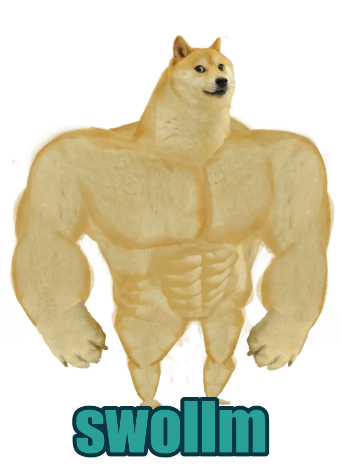
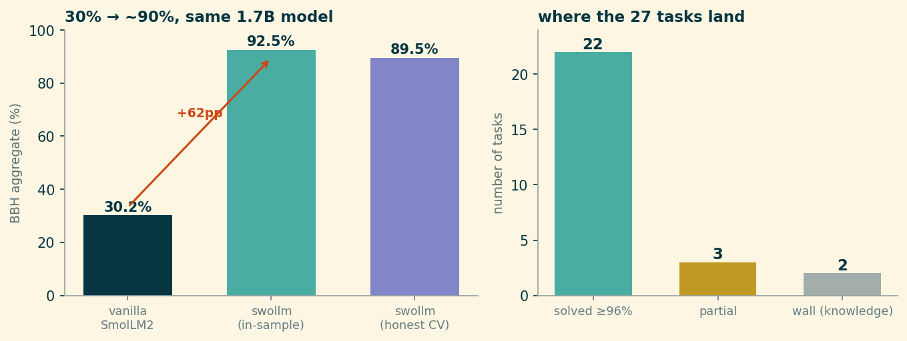
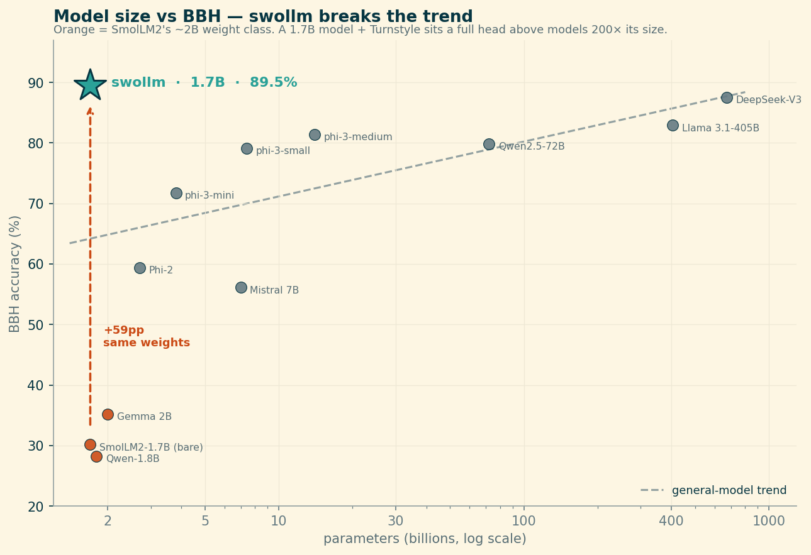
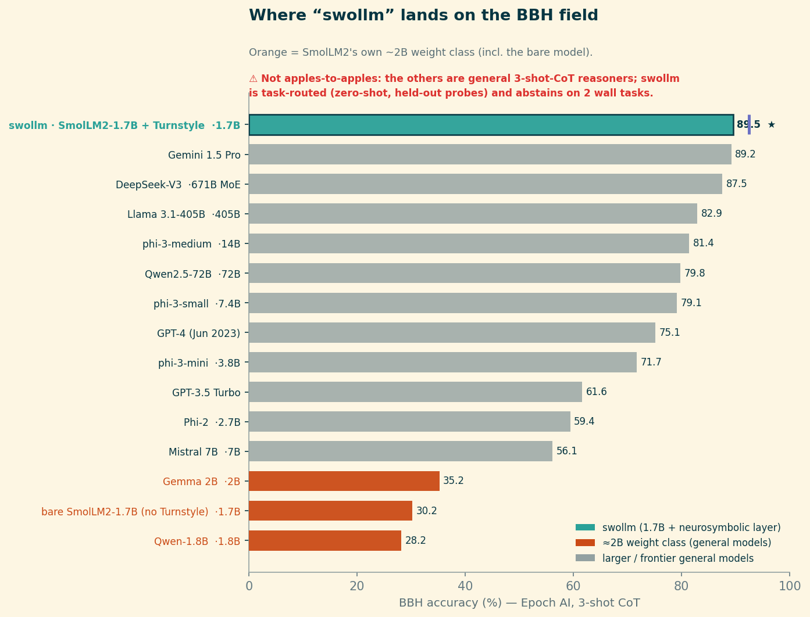

A small model doesn’t usually fail because it can’t compute the answer. It fails because it won’t stop guessing long enough to compute it.
BIG-Bench Hard (BBH) is a curated set of tasks where, at the time it was assembled, language models did worse than the average human rater: multi-step arithmetic, tracking shuffled objects, Dyck-language bracket closing, date arithmetic, logical deduction over ordered constraints. It was designed to be a wall for models that lean on pattern-matching instead of procedure.
So a small model should faceplant on it, and SmolLM2-1.7B — a genuinely tiny open model by 2026 standards — does. Three-shot prompted, it averages 30.2% across the 27-task suite. On multistep_arithmetic_two it scores 0.4%. It is not close.
Here is the same model, unchanged, wrapped in a neurosymbolic layer I call Turnstyle (the wrapped model, affectionately, is “swollm”):

movie_recommendation and salient_translation, which look like dead baseline until you probe them — more below). The two grey bars, causal_judgement and sports_understanding, are the genuine knowledge walls.The aggregate goes from 30.2% to 92.5% in-sample — and to a hard-nosed ~89.5% once every probe is cross-validated and forced to be order-robust (more on both below). Either way it is a roughly +60-point swing on the identical 1.7B weights. Eighteen of the twenty-seven tasks land at exactly 100%; twenty-two clear 96%. Nobody fine-tuned anything. The trick is entirely in how the model is asked, and what happens to its answer before it commits to one.
Try it yourself. The bare model and the wrapped model run side by side — each answer with its worked proof — in the live Turnstyle demo on Hugging Face.
Three ways to answer
The wrapper’s whole architecture fits in one sentence: parse the prompt into a typed task, then either prove the answer, recognize it, or admit you can’t.
Prove it (teal). A lot of BBH is secretly deterministic. multistep_arithmetic_two is a parenthesized integer expression — you don’t need a 1.7B transformer to “reason” about ((6 * -6 * 8) * (-1 * 7 * -6 + -2)), you need an AST and Python. dyck_languages is a bracket stack. tracking_shuffled_objects is replaying a list of swaps. web_of_lies is propagating truth values down a chain. For these, Turnstyle parses the prompt into a structured form, runs an exact solver, and then biases the model’s generation toward the proven answer with a logit constraint — so the model still produces the text, but it can no longer wander off the correct token. These are the bars that hit 100%, and they hit it because a proof is a proof.
Recognize it (purple). Some tasks aren’t computable from the prompt — they need a judgment the model actually holds but won’t say. snarks (which of two sentences is sarcastic) is the cleanest example: three-shot, SmolLM2 scores 46% — below chance for a binary task. It has strong, confident, wrong opinions. But the judgment is in there: train a small linear probe on the model’s hidden state at the right layer and read the answer directly off the activation, and it goes to 100% in-sample / 74% cross-validated. Same for pronoun disambiguation, temporal ordering, humorous-name edits. The model knows; generation was the bottleneck.
Admit the wall (grey). Two tasks don’t move at all: causal_judgement and sports_understanding. These are knowledge-loaded — they turn on facts and judgments a 1.7B model trained on a modest corpus may simply not have, and a probe on its hidden state does no better than guessing the majority class. The honest move is to detect that there’s no signal to extract and fall back to the bare model rather than fabricate a solver that overfits 250 examples. The two grey bars are a feature: they’re where the system correctly declines to pretend.
That triad — ⊢ proved, ⊨ recognized, or abstain — is the entire idea. The name “Turnstyle” is a pun on the logical turnstile: ⊢ for syntactically derivable (the symbolic solvers) and ⊨ for semantically entailed (the probes recognize what the model already represents).
The honest accounting
Here’s where I have to slow down, because the headline number is doing two slightly different things at once.

The symbolic tasks (teal) are honest at 100% — a proof generalizes, there’s no in-sample/out-of-sample distinction for arithmetic. But the probe tasks (purple) are fit on the BBH examples themselves, and a probe that scores 100% in-sample will score lower on held-out data. When you replace each probe’s in-sample number with its 5-fold cross-validated number, the aggregate settles at about 89.5%, not 92.5%. That ~3-point gap is the part of the headline that’s borrowed against future data, and I’d rather show you the gap than launder it.
A second honesty knob: the probes have to be order-robust. A multiple-choice probe that reads “which option is the answer” can secretly learn “the answer is usually B.” We test this by permuting the options and re-scoring; an honest probe’s accuracy shouldn’t move. Early versions moved by 15 points. The shipped ones score the options in a position-marginalized way (average over cyclic shifts) so the number you see survives reordering — at the cost of a couple points of raw accuracy. The robust number is the real one.
The walls weren’t all walls
Look at the two tasks sitting just above the walls — movie_recommendation and salient_translation. They almost ended up grey.
Three-shot, the model generates the right movie about 22% of the time, so for a long while I had both filed under “no representation to extract” — apparent walls. That turned out to be wrong, and wrong in a way that matters. When I trained a recognition probe on them the way I had for snarks, the signal was there: the movie probe recognizes the right answer at ~50% in-sample and ~80% on held-out data, against that 22% generation. The model could recognize the correct movie far better than it could generate it — the wall was the same generation bottleneck snarks had, hidden behind a multiple-choice format I hadn’t probed correctly. (salient_translation recovered the same way, 14% → ~42%.)
causal_judgement and sports_understanding, by contrast, stayed grey — their probes score no better than the majority class, which is exactly what a genuine knowledge gap looks like. So what first looked like four walls is really two walls and two illusions — and those two recovered tasks are why the honest aggregate lands near 89.5% rather than the mid-80s.
The general law underneath: recognition ≫ generation. A small model’s answer is a lossy readout of a richer internal state. If you can find the state and read it directly — with a probe, or by routing the question to a solver — you can recover capability the model has but cannot articulate. “Stop guessing” is not a metaphor; it’s the mechanism.
Where a 1.7B model lands
It’s worth seeing the placement, with the asterisk attached — against Epoch AI’s BBH leaderboard of general models, run with standardized 3-shot chain-of-thought. Plot parameter count against score and swollm doesn’t sit on the curve at all:

A 1.7B model sitting above DeepSeek-V3 and Llama-3.1-405B — and 59 points above the bare SmolLM2 of identical size. As a flat ranking it tells the same story:

The honest reading isn’t “a 1.7B model ties Gemini.” It’s the orange bars: every other model in SmolLM2’s weight class — Qwen-1.8B, Gemma 2B, and bare SmolLM2 itself — lives at 28–35%, exactly where you’d expect a tiny model on a benchmark built to break tiny models. The neurosymbolic layer is the entire difference between the bottom of that chart and the top of it, on identical-size weights. What the comparison measures is not raw intelligence; it’s how much of a small model’s latent capability is being thrown away by letting it guess.
What this is and isn’t
This is not a claim that a 1.7B model beats GPT-scale models on reasoning. The giants run chain-of-thought and answer in free text on tasks Turnstyle hasn’t parsed; the comparison isn’t apples-to-apples and I’m not going to pretend it is. BBH here is a test harness, not the objective — it provides ground-truth labels and structural variety to validate tools that are supposed to work beyond BBH. The arithmetic solver, the bracket solver, the polarity probe, the date solver: each is built to generalize past the 250 examples it was checked on, and several are deliberately stripped of their BBH-specific scaffolding and re-tested on the bare capability.
What it is: evidence that a large fraction of “small models can’t reason” is actually “small models can’t commit.” The capability is frequently present — as a computable structure in the prompt, or as a recognizable pattern in the activations — and a thin, cheap, training-free layer that parses, proves, recognizes, or honestly abstains can surface most of it. No new parameters. No fine-tuning. Just refusing to let a 1.7B model guess when it could instead know.
You can poke at it yourself — the bare model and the wrapped model, side by side, with the worked proof for each answer — on the live demo. Try the arithmetic expression first. Watch the left pane confidently produce a wrong number, and the right pane prove the right one.
Code & data: github.com/jdonaldson/turnstyle. The baseline and symbolic per-task numbers come from the swollm 3-shot evaluation (results/v13/bbh_full.json); the movie/salient recognition probes and the ~89.5% honest aggregate are from turnstyle’s native dispatch. Figures regenerate from experiments/blog_bbh_figs.py.
© Copyright 2025 Justin Donaldson. Except where otherwise noted, all rights reserved. The views and opinions on this website are my own and do not represent my current or former employers.
Citation
@online{donaldson2026,
author = {Donaldson, Justin and (Opus), Claude},
title = {A {1.7B} {Model} {That} {Stops} {Guessing}},
date = {2026-06-27},
url = {https://www.jjd.io/posts/swollm-bbh-leaderboard.html},
langid = {en}
}